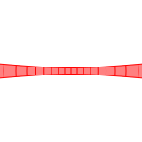
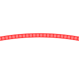
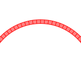
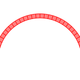
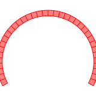
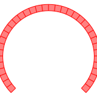
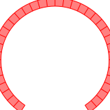
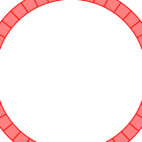
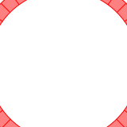

Helicatenoid


Weaving a transformable curved surface from catenoid to helicoid.
Load packages
using IntervalSets
using BasicBSpline
using StaticArrays
using ElasticSurfaceEmbeddingDefine the shape of the surface (non-periodic direction)
ElasticSurfaceEmbedding.𝒑₍₀₎(u¹,u²) = SVector(cos(u²)*cosh(u¹),sin(u²)*cosh(u¹),u¹)
n=9
Da(n) = (-π/2..π/2,-π/(4n)..π/(4n))Da (generic function with 1 method)Compute the shape of the embeddings
show_strain(Da(n))
steptree = initial_state(Da(n), n₁=33)
newton_onestep!(steptree, fixingmethod=:fix3points)
newton_onestep!(steptree)
newton_onestep!(steptree)
newton_onestep!(steptree)
newton_onestep!(steptree)
refinement!(steptree, p₊=(0,1), k₊=(EmptyKnotVector(), KnotVector([0])))
newton_onestep!(steptree)
newton_onestep!(steptree)
pin!(steptree)1: Initial state - domain: [-1.5707963267948966, 1.5707963267948966]×[-0.08726646259971647, 0.08726646259971647]
└─2: Newton onestep - residual norm: 3.6154e-02, Δa norm: 5.8360e-02, computation time: 48ms
└─3: Newton onestep - residual norm: 2.6140e-03, Δa norm: 3.5857e-02, computation time: 48ms
└─4: Newton onestep - residual norm: 1.5013e-04, Δa norm: 2.1307e-04, computation time: 48ms
└─5: Newton onestep - residual norm: 7.6163e-08, Δa norm: 1.5768e-07, computation time: 48ms
└─6: Newton onestep - residual norm: 6.0944e-14, Δa norm: 1.1495e-13, computation time: 48ms
└─7: Refinement - p₊:(0, 1), k₊:(Bool[], [0])
└─8: Newton onestep - residual norm: 2.4472e-03, Δa norm: 6.3782e-04, computation time: 166ms
└─9: 📌 Newton onestep - residual norm: 3.1109e-06, Δa norm: 1.5813e-06, computation time: 166ms
Export the shape in SVG format
export_pinned_steps("helicatenoid-a", steptree, unitlength=(40,"mm"), mesh=(18,1))1-element Vector{String}:
"helicatenoid-a/pinned/pinned-9.svg"
Define the shape of the surface (periodic direction)
ElasticSurfaceEmbedding.𝒑₍₀₎(u¹,u²) = SVector(cos(u¹)*cosh(u²),sin(u¹)*cosh(u²),u²)
Db(i,n) = (-π..π,(i-1)*π/(2n)..(i)*π/(2n))
# Check the maximum strain
for i in 1:9
show_strain(Db(i,n))
end
# Numerical computing
steptree = StepTree()
for i in 1:9
initial_state!(steptree, Db(i,n), n₁=33)
newton_onestep!(steptree, fixingmethod=:fix3points)
newton_onestep!(steptree)
newton_onestep!(steptree)
newton_onestep!(steptree)
newton_onestep!(steptree)
refinement!(steptree, p₊=(0,1), k₊=(EmptyKnotVector(),KnotVector([(i-1/2)*π/(2n)])))
newton_onestep!(steptree)
newton_onestep!(steptree)
pin!(steptree)
end┌ Info: Strain - domain: [-3.141592653589793, 3.141592653589793]×[0.0, 0.17453292519943295]
└ Predicted: (min: -0.0025192446028988627, max: 0.0012596223014494311)
┌ Info: Strain - domain: [-3.141592653589793, 3.141592653589793]×[0.17453292519943295, 0.3490658503988659]
└ Predicted: (min: -0.0023721456374501803, max: 0.0011860728187250893)
┌ Info: Strain - domain: [-3.141592653589793, 3.141592653589793]×[0.3490658503988659, 0.5235987755982988]
└ Predicted: (min: -0.0021105110486750235, max: 0.0010552555243375109)
┌ Info: Strain - domain: [-3.141592653589793, 3.141592653589793]×[0.5235987755982988, 0.6981317007977318]
└ Predicted: (min: -0.0017852175622718365, max: 0.0008926087811359181)
┌ Info: Strain - domain: [-3.141592653589793, 3.141592653589793]×[0.6981317007977318, 0.8726646259971648]
└ Predicted: (min: -0.0014467651124962513, max: 0.0007233825562481255)
┌ Info: Strain - domain: [-3.141592653589793, 3.141592653589793]×[0.8726646259971648, 1.0471975511965976]
└ Predicted: (min: -0.0011324094230442416, max: 0.0005662047115221195)
┌ Info: Strain - domain: [-3.141592653589793, 3.141592653589793]×[1.0471975511965976, 1.2217304763960306]
└ Predicted: (min: -0.0008625146964147976, max: 0.000431257348207397)
┌ Info: Strain - domain: [-3.141592653589793, 3.141592653589793]×[1.2217304763960306, 1.3962634015954636]
└ Predicted: (min: -0.0006434206242097736, max: 0.00032171031210488546)
┌ Info: Strain - domain: [-3.141592653589793, 3.141592653589793]×[1.3962634015954636, 1.5707963267948966]
└ Predicted: (min: -0.0004725795731298401, max: 0.0002362897865649191)Export the shapes in SVG format
export_pinned_steps("helicatenoid-b", steptree, unitlength=(40,"mm"), mesh=(36,1))9-element Vector{String}:
"helicatenoid-b/pinned/pinned-9.svg"
"helicatenoid-b/pinned/pinned-18.svg"
"helicatenoid-b/pinned/pinned-27.svg"
"helicatenoid-b/pinned/pinned-36.svg"
"helicatenoid-b/pinned/pinned-45.svg"
"helicatenoid-b/pinned/pinned-54.svg"
"helicatenoid-b/pinned/pinned-63.svg"
"helicatenoid-b/pinned/pinned-72.svg"
"helicatenoid-b/pinned/pinned-81.svg"       
This page was generated using DemoCards.jl and Literate.jl.